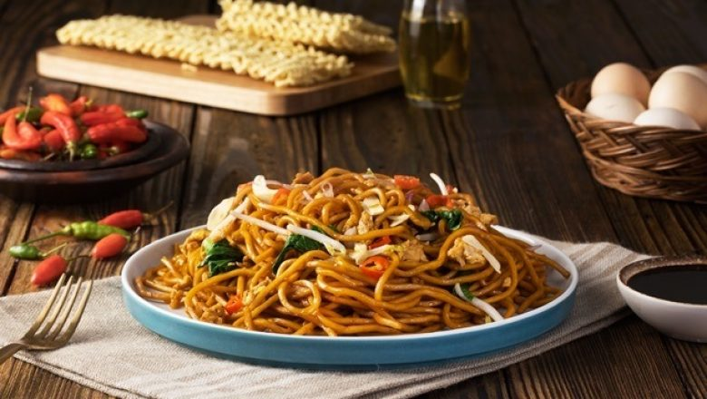

Mie Goreng Restoran

Mie goreng sebetulnya tidak harus selalu berisi daging ayam. Untuk membuat mie goreng telur yang satu ini, aku justru mencoba opsi yang
lumayan vegetarian-friendly meskipun masih menggunakan telur ayam.
Salah satu alasannya
adalah karena mie goreng tanpa telur itu bagaikan ketoprak tanpa kecap manis. Wah, perumpamaannya malah masakan kesukaanku lainnya deh! Jadi malu.
Bahan
-
120
g mie telur, rebus lalu sisihkan
-
100
g taoge, siram air panas dan tiriskan
-
200 g sawi, iris kasar lalu seduh dan tiriska
-
2
butir telur ayam kampung, kocok lepas
-
2 siung bawang putih, iris tipis
-
4 butir bawang merah, iris tipis
-
2 buah cabai rawit, iris tipis
-
1
sdt garam
-
1 sdt merica putih bubuk
-
30
ml
Bango Kecap Manis
Cara Membuat Nasi Goreng Sosis
-
Tumis irisan bawang merah, putih dan cabai hingga harum
-
Tambahkan kocokan telur lepas dan aduk rata di atas wajan.
-
Masukan mie, taoge, dan sawi yang telah direbus dan ditiriskan sebelumnya. Kembali aduk perlahan.
-
Tambahkan gula, garam, merica dan Bango Kecap Manis secukupnya.
-
Setelah matang dan tercampur rata, angkat dan sajikan dengan pelengkap.
Tutorial Lengkapnya ada di Link MieGor